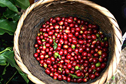
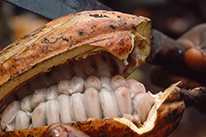
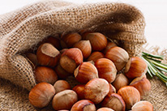
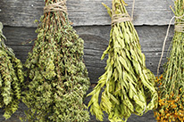
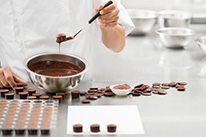

Главная
О нас
Введение
История о марке
новости
Продукции
Святая лауда
Доблестные баготыри
Счастливчик
Шпиль Урала
Свяжитесь с нами
Динамическое предприятий

изамедления поседения шоколада является
В качестве эффективного метода предотвращения изамедления поседения шоколада является тепловая обработка изделий вскоре после их извлечения из гла- зировочной машины

изамедления поседения шоколада является
В качестве эффективного метода предотвращения изамедления поседения шоколада является тепловая обработка изделий вскоре после их извлечения из гла- зировочной машины

изамедления поседения шоколада является
В качестве эффективного метода предотвращения изамедления поседения шоколада является тепловая обработка изделий вскоре после их извлечения из гла- зировочной машины

изамедления поседения шоколада является
В качестве эффективного метода предотвращения изамедления поседения шоколада является тепловая обработка изделий вскоре после их извлечения из гла- зировочной машины

изамедления поседения шоколада является
В качестве эффективного метода предотвращения изамедления поседения шоколада является тепловая обработка изделий вскоре после их извлечения из гла- зировочной машины